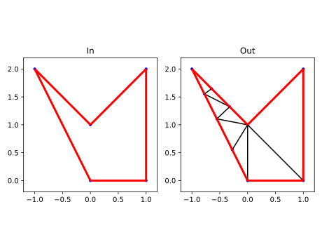
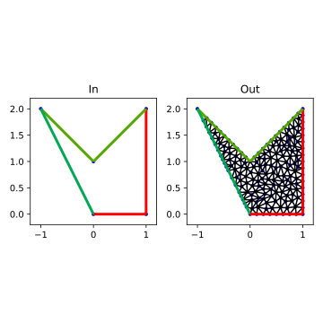
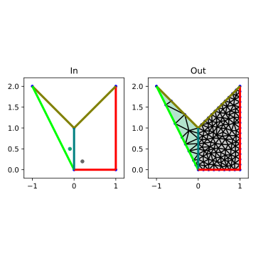
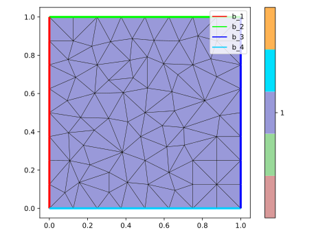
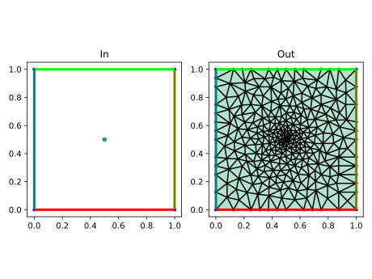
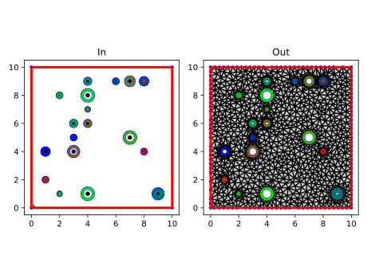

2D Triangulations
These examples can be loaded into Julia (Revise.jl recommended)
These examples return either a SimplexGridBuilder struct which can be turned into a grid by calling simplexgrid(builder), or just an ExtendableGrid with default simplex grid data.
The control flags for Triangle are created based on default options provided by this module which try to ensure "good" grids for FEM and FVM computations. These are documented in default_options Occasional options! statements in the examples overwrite these defaults.
using SimplexGridFactory
using ExtendableGrids
using LinearAlgebraDomain triangulation
Here we just describe a domain as a polygon and mesh it.
function triangulation_of_domain()
builder=SimplexGridBuilder(dim=2)
p1=point!(builder,0,0)
p2=point!(builder,1,0)
p3=point!(builder,1,2)
p4=point!(builder,0,1)
p5=point!(builder,-1,2)
facet!(builder,p1,p2)
facet!(builder,p2,p3)
facet!(builder,p3,p4)
facet!(builder,p4,p5)
facet!(builder,p5,p1)
builder
end
Triangulation with size control and boundary markers
The previous example was a little bit bland. We miss:
- size control for the triangles
- differently marking of boundary parts
function nicer_triangulation_of_domain()
builder=SimplexGridBuilder(dim=2)
p1=point!(builder,0,0)
p2=point!(builder,1,0)
p3=point!(builder,1,2)
p4=point!(builder,0,1)
p5=point!(builder,-1,2)
facetregion!(builder,1)
facet!(builder,p1,p2)
facet!(builder,p2,p3)
facetregion!(builder,2)
facet!(builder,p3,p4)
facet!(builder,p4,p5)
facetregion!(builder,3)
facet!(builder,p5,p1)
options!(builder,maxvolume=0.01)
builder
end
Triangulation with subregions
Here we create different subregions and apply the maxvolume constraint to the subregions
function triangulation_of_domain_with_subregions()
builder=SimplexGridBuilder(dim=2)
p1=point!(builder,0,0)
p2=point!(builder,1,0)
p3=point!(builder,1,2)
p4=point!(builder,0,1)
p5=point!(builder,-1,2)
facetregion!(builder,1)
facet!(builder,p1,p2)
facet!(builder,p2,p3)
facetregion!(builder,2)
facet!(builder,p3,p4)
facet!(builder,p4,p5)
facetregion!(builder,3)
facet!(builder,p5,p1)
facetregion!(builder,4)
facet!(builder,p1,p4)
cellregion!(builder,2)
maxvolume!(builder, 0.1)
regionpoint!(builder, -0.1,0.5)
cellregion!(builder,3)
maxvolume!(builder, 0.01)
regionpoint!(builder, 0.2,0.2)
builder
end
Direct specification of input arrays
Of course we can specify the input for Triangle directly. The aim of SimplexBuilder is to avoid the tedious and error prone counting connected with this approach.
function direct_square()
simplexgrid(points=[0 0 ; 0 1 ; 1 1 ; 1 0]',
bfaces=[1 2 ; 2 3 ; 3 4 ; 4 1 ]',
bfaceregions=[1, 2, 3, 4],
regionpoints=[0.5 0.5;]',
regionnumbers=[1],
regionvolumes=[0.01])
end
Local refinement
We can interface to Triangle's unsuitable mechanism
function square_localref()
builder=SimplexGridBuilder(dim=2)
cellregion!(builder,1)
maxvolume!(builder,0.01)
regionpoint!(builder,0.5,0.5)
p1=point!(builder,0,0)
p2=point!(builder,1,0)
p3=point!(builder,1,1)
p4=point!(builder,0,1)
facetregion!(builder,1)
facet!(builder,p1,p2)
facetregion!(builder,2)
facet!(builder,p2,p3)
facetregion!(builder,3)
facet!(builder,p3,p4)
facetregion!(builder,4)
facet!(builder,p4,p1)
refinement_center=[0.5,0.5]
function unsuitable(x1,y1,x2,y2,x3,y3, area)
bary=[(x1+x2+x3)/3,(y2+y2+y3)/3]
dist=norm(bary-refinement_center)
if area > 0.01*dist
return 1
else
return 0
end
end
options!(builder, unsuitable=unsuitable)
builder
end
Domain with holes
We can generate domains with holes. This at once shall demonstrate how the chosen API approach eases bookeeping of features added to the geometry description
function swiss_cheese_2d()
function circlehole!(builder, center, radius; n=20)
points=[point!(builder, center[1]+radius*sin(t),center[2]+radius*cos(t)) for t in range(0,2π,length=n)]
for i=1:n-1
facet!(builder,points[i],points[i+1])
end
facet!(builder,points[end],points[1])
holepoint!(builder,center)
end
builder=SimplexGridBuilder(dim=2)
cellregion!(builder,1)
maxvolume!(builder,0.1)
regionpoint!(builder,0.1,0.1)
p1=point!(builder,0,0)
p2=point!(builder,10,0)
p3=point!(builder,10,10)
p4=point!(builder,0,10)
facetregion!(builder,1)
facet!(builder,p1,p2)
facet!(builder,p2,p3)
facet!(builder,p3,p4)
facet!(builder,p4,p1)
holes=[8.0 4.0;
1.0 2.0;
8.0 9.0;
3.0 4.0;
4.0 6.0;
7.0 9.0;
4.0 7.0;
7.0 5.0;
2.0 1.0;
4.0 1.0;
4.0 8.0;
2.0 8.0;
3.0 6.0;
4.0 9.0;
9.0 1.0;
9.0 1.0;
6.0 9.0;
8.0 9.0;
3.0 5.0;
1.0 4.0]'
radii=[0.15, 0.15, 0.1, 0.35, 0.2, 0.3, 0.1, 0.4, 0.1, 0.4, 0.4, 0.15, 0.2, 0.2, 0.2, 0.35, 0.15, 0.25, 0.15, 0.25]
for i=1:length(radii)
facetregion!(builder,i+1)
circlehole!(builder,holes[:,i], radii[i])
end
builder
end
Extracting data from a grid
You may want to use the this package to obtain grid data for your applicatio. The ExtendableGrids package provides a lightweight grid data structure which in its core is a Dict{Type,Any} and the possibility to dispatch the return type on the key.
function extract_2d()
builder=SimplexGridBuilder(dim=2)
p1=point!(builder,0,0)
p2=point!(builder,1,0)
p3=point!(builder,1,1)
p4=point!(builder,0,1)
facetregion!(builder,1)
facet!(builder,p1,p2)
facetregion!(builder,2)
facet!(builder,p2,p3)
facetregion!(builder,3)
facet!(builder,p3,p4)
facetregion!(builder,4)
facet!(builder,p4,p1)
grid=simplexgrid(builder,maxvolume=0.25)
@show grid[Coordinates]
@show grid[CellNodes]
@show grid[CellRegions]
@show grid[BFaceNodes]
@show grid[BFaceRegions]
grid
endThe output of this call is this:
grid[Coordinates] = [0.0 1.0 1.0 0.0 0.5; 0.0 0.0 1.0 1.0 0.5]
grid[CellNodes] = Int32[2 4 5 1; 3 1 3 2; 5 5 4 5]
grid[CellRegions] = Int32[1, 1, 1, 1]
grid[BFaceNodes] = Int32[2 3 4 1; 1 2 3 4]
grid[BFaceRegions] = Int32[1, 2, 3, 4]Thus, the grid is described by five arrays: 2 x npoints coordinates, 3 x ntriangles connectivity, ntriangles region markers, 2 x nfacets boundary faces, nfacets boundary face markers.
This page was generated using Literate.jl.